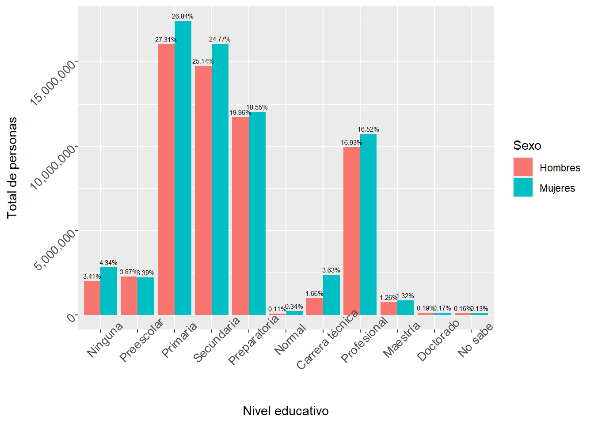
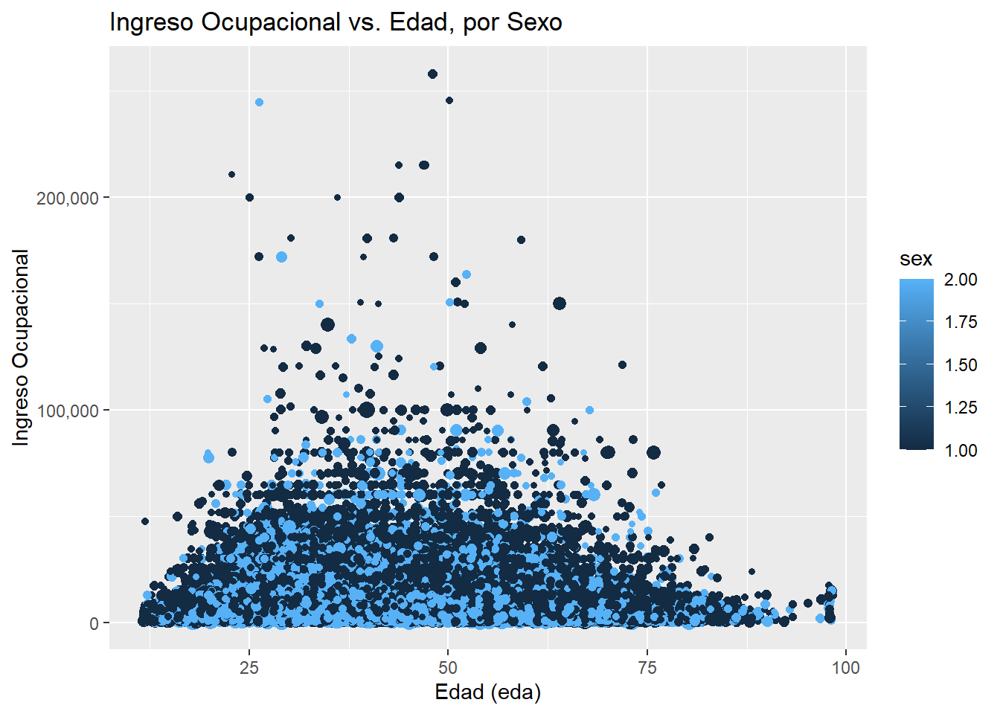

library(foreign)
library(dplyr)
library(ggplot2)
library(survey)
library(scales)Diseño de muestras complejas y modelos de regresión
Como primer paso cargamos las librerías.
Abrimos la base de datos que usaremos (sustituir ruta).
Enoe_2025_T2<-read.csv("C:/Users/USER/Downloads/Bases de datos/INEGI/ENOE SDME 2015 a 2025/conjunto_de_datos_sdem_enoe_2025_2t.csv")Exploramos los estratos y los conglomerados que se emplearán para el diseño de la muestra.
ggplot(Enoe_2025_T2, aes(x=fac_tri))+
geom_histogram()+
facet_wrap(~est)
#Observamos el tamaño de los cluster.
#| message: false
#| warning: false
Enoe_2025_T2%>%
summarize(n_clusters=n_distinct(est, upm)) n_clusters
1 21188#Para ver en detalle la composición de los clusters correr el código:
#Enoe_2025_T2%>%
#count(est, upm)Creamos nuestro diseño muestral.
diseno<-svydesign(id=~upm, strata=~est, data=Enoe_2025_T2,
weights=~fac_tri)El diseño muestral es la parte clave para la utilización muestras complejas, ya que nos permite realizar inferencias sobre la población utilizando una muestra (en este caso, una muestra recogida de la ENOE). Es necesario continuar la utilización del diseño (calculado con la paquetería survey) para hacer uso de estimadores puntales más precisos. Ejemplo de la diferencia entre valores no ponderados y ponderados (mediante diseño muestral):
#No ponderado
sex<-Enoe_2025_T2%>%
group_by(sex)%>%
summarize(Freq= n())%>% #Contamos el la frecuencia agrupada por sexo
mutate(Prop=round(Freq*100/sum(Freq), 1))%>% #Calculamos la proporción para cada grupo de sexo
arrange(desc(Prop)) #Ordenamos de forma descendente
sex# A tibble: 3 × 3
sex Freq Prop
<int> <int> <dbl>
1 2 216059 51
2 1 197821 46.7
3 NA 9864 2.3#Ponderado
sex_fac<-svytable(~sex, design=diseno)%>% #Creamos una tabla a partir de los datos del diseño muestral
as.data.frame()%>% #Convertimos la data del diseño a un data frame
mutate(Prop=round(Freq*100/sum(Freq), 1))%>%
arrange(desc(Prop))
sex_fac sex Freq Prop
1 2 68315426 52.3
2 1 62260360 47.7#No ponderado
edu<-Enoe_2025_T2%>%
group_by(cs_p13_1)%>%
summarize(Freq=n())%>%
mutate(Prop=round(Freq*100/sum(Freq), 1))
edu# A tibble: 12 × 3
cs_p13_1 Freq Prop
<int> <int> <dbl>
1 0 13278 3.1
2 1 14088 3.3
3 2 100655 23.8
4 3 98738 23.3
5 4 77410 18.3
6 5 1125 0.3
7 6 10374 2.4
8 7 69832 16.5
9 8 5233 1.2
10 9 820 0.2
11 99 598 0.1
12 NA 31593 7.5#Ponderado
educa_fac<-svytable(~cs_p13_1, design = diseno)%>%
as.data.frame()%>%
mutate(Prop_ponderada=round(Freq*100/sum(Freq), 1))
educa_fac cs_p13_1 Freq Prop_ponderada
1 0 4820649 3.9
2 1 4479104 3.6
3 2 33478852 27.1
4 3 30862018 24.9
5 4 23775017 19.2
6 5 289694 0.2
7 6 3337528 2.7
8 7 20680934 16.7
9 8 1597867 1.3
10 9 220364 0.2
11 99 179911 0.1Observamos gráficamente los resultados de las tablas.
#Gráfica con datos de educación no ponederados
ggplot(data = edu[edu$cs_p13_1 < 10, ],
aes(x = factor(cs_p13_1), y = Prop)) +
geom_col(fill = "lightblue") +
scale_x_discrete(labels = c("Ninguna", "Preescolar", "Primaria", "Secundaria",
"Preparatoria", "Normal", "Carrera técnica",
"Profesional", "Maestría", "Doctorado")) +
theme(axis.text = element_text(size = 10, angle = 45),
legend.position = "none") +
geom_text(aes(label = paste0(Freq, " ", "", "\n(", Prop, "%)"))) +
labs(title = "Niveles de educación: Frecuencia y proporción no ponderadas",
x = "Nivel de educación", y = "Proporción")
#Gráfica con datos ponderados
ggplot(data = educa_fac, aes(x=cs_p13_1, y= Prop_ponderada))+
geom_col(fill="darkred")+
scale_x_discrete(limits=edu[edu$cs_p13_1 < 10,]$cs_p13_1, labels=c("Ninguna","Preescolar","Primaria", "Secundaria",
"Preparatoria",
"Normal", "Carrera técnica",
"Profesional",
"Maestría","Doctorado","No sabe"))+
theme(axis.text = element_text(size=10, angle=45),legend.position =
"none")+
geom_text(aes(label=paste0(Freq, " ", "", "\n(", Prop_ponderada, "%",")")))+
labs(title="Niveles de educación: Frecuencia y proporción ponderadas", x="Nivel
de educación",y="Proporción")
Continuando con el análisis de datos ponderados, creamos una tabla de contingencia para las variables sexo y educación.
#Data no ponderada
Enoe_2025_T2%>%
group_by(sex, cs_p13_1)%>%
summarise(Freq= n())`summarise()` has grouped output by 'sex'. You can override using the `.groups`
argument.# A tibble: 25 × 3
# Groups: sex [3]
sex cs_p13_1 Freq
<int> <int> <int>
1 1 0 5570
2 1 1 7125
3 1 2 48411
4 1 3 47327
5 1 4 38374
6 1 5 305
7 1 6 3011
8 1 7 33567
9 1 8 2379
10 1 9 418
# ℹ 15 more rows#Data ponderada con diseño muestral
educa_sex<- svytable(~cs_p13_1+ sex, design = diseno)
educa_sex sex
cs_p13_1 1 2
0 2003542 2817107
1 2273821 2205283
2 16045579 17433273
3 14771561 16090457
4 11726053 12048964
5 66848 222846
6 976599 2360929
7 9947585 10733349
8 742697 855170
9 109866 110498
99 93952 85959#Lo convertimos a un dataframe
educa_sex<- as.data.frame(educa_sex)
educa_sex cs_p13_1 sex Freq
1 0 1 2003542
2 1 1 2273821
3 2 1 16045579
4 3 1 14771561
5 4 1 11726053
6 5 1 66848
7 6 1 976599
8 7 1 9947585
9 8 1 742697
10 9 1 109866
11 99 1 93952
12 0 2 2817107
13 1 2 2205283
14 2 2 17433273
15 3 2 16090457
16 4 2 12048964
17 5 2 222846
18 6 2 2360929
19 7 2 10733349
20 8 2 855170
21 9 2 110498
22 99 2 85959Obtenemos las proporciones de niveles de educación por sexo:
prop_edu_sex<- educa_sex%>%
as.data.frame()%>%
group_by(sex)%>%
mutate(n_sex=sum(Freq), Prop_educa=Freq/sum(Freq))%>%
ungroup
prop_edu_sex# A tibble: 22 × 5
cs_p13_1 sex Freq n_sex Prop_educa
<fct> <fct> <dbl> <dbl> <dbl>
1 0 1 2003542 58758103 0.0341
2 1 1 2273821 58758103 0.0387
3 2 1 16045579 58758103 0.273
4 3 1 14771561 58758103 0.251
5 4 1 11726053 58758103 0.200
6 5 1 66848 58758103 0.00114
7 6 1 976599 58758103 0.0166
8 7 1 9947585 58758103 0.169
9 8 1 742697 58758103 0.0126
10 9 1 109866 58758103 0.00187
# ℹ 12 more rowsGraficamos las proporciones de niveles de educación por sexo:
ggplot(data= prop_edu_sex, aes(x= sex, fill = cs_p13_1, y= Prop_educa))+
geom_col()+
scale_fill_discrete(labels =c("Ninguna","Preescolar","Primaria", "Secundaria",
"Preparatoria",
"Normal", "Carrera técnica",
"Profesional",
"Maestría","Doctorado","No sabe"))+
guides(fill=guide_legend(title="Nivel"))+
scale_x_discrete( labels=c("Hombres", "Mujeres"))+
theme(axis.text = element_text(size=10, angle=45),legend.position =
"right")+
labs(title="Nivel de educación del jefe de familia por sexo",
x="Sexo",y="Proporción")
Graficamos la tabla de niveles de educación por sexo:
ggplot(data=prop_edu_sex, aes(x=cs_p13_1, fill = sex, y= Freq))+
geom_col(position = "dodge")+ #Colocamos columnas separadas.
geom_text(
aes(label = scales::label_percent(accuracy = 0.01)(Prop_educa)), # 2. Usar label_percent
position = position_dodge(width = 0.9),
vjust = -0.5,
size = 2 # Aumenté un poco el tamaño de la fuente para mejor legibilidad
) +
scale_y_continuous(labels = scales::label_number(big.mark = ",", decimal.mark = "."))+
scale_fill_discrete(labels=c("Hombres","Mujeres"))+ #Colocamos etiquetas para la variable sexo.
guides(fill=guide_legend(title = "Sexo"))+
scale_x_discrete(limits=educa_sex$cs_p13_1, labels=c("Ninguna","Preescolar","Primaria", "Secundaria","Preparatoria","Normal", "Carrera técnica","Profesional","Maestría","Doctorado","No sabe"))+
theme(axis.text = element_text(size= 10, angle=45), legend.position ="right")+
labs(tittle="Nivel de educacion del jefe de familia", x="Nivel educativo", y= "Total de personas")
Con la exploración de las tablas y de las gráficas podemos pensar que existe una diferencia entre niveles educativos en función de la variable sexo. Para observar mejor esta diferencia, debemos cuantificar esta relación. Para ello, realizamos una prueba de independencia chi-cuadrado, aplicando el diseño muestra establecido y sometiendo al cálculo de la función svychisq a las variables categóricas (nivel de educación en función del sexo).
svychisq(~cs_p13_1+sex, design = diseno, static="Chisq") #Prueba de independencia Chi-cuadrada de pearson
Pearson's X^2: Rao & Scott adjustment
data: svychisq(~cs_p13_1 + sex, design = diseno, static = "Chisq")
F = 78.013, ndf = 9.5774e+00, ddf = 2.0289e+05, p-value < 2.2e-16Resultados: Debido al diseño muetral complejo, el svychisq no proudce un valor de x cuadrado estándar, en su lugar calcula un Estadístico F de Rao y Scott para probar la independencia.
F = 78.013: resume qué tan grande es la diferencia observada entre las frecuencias esperadas y las dos variables si fueran completamente independientes. Un valor grande sugiere una independencia poco probable.
P-value < 2.2e-16: Representa la probabilidad de observar un estadístico de F si H0 (hipótesis nula) fuera cierta. Un valor extremadamente pequeño (con significancia alpha<0.05) indica que es altamente improbable que las variables sean independientes.
Para este caso se rechaza H0, lo que implica una relación de dependencia entre varaibles. Para el siguiente análisis tomaremos una variable numérica continua: el ingreso.
#Como primer paso creamos un filtro para analizar sólo aquellas observaciones que tengan un ingreso>0
diseño_ingresos_filt<-subset(diseno, ingocup >0)
#Calculamos la media bajo el diseño muestras complejas. Esto permite observar los errores estándar para el cálculo de las estimaciones.
svymean(~ingocup, design= diseño_ingresos_filt, na.rm= T) mean SE
ingocup 10221 67.744#Calculamos los cuartiles
svyquantile(~ingocup, design= diseño_ingresos_filt, na.rm= T, quantile=c(0.01,.25,.5,.75,.9))$ingocup
quantile ci.2.5 ci.97.5 se
0.01 625 591 645 13.77491
0.25 5200 5160 5590 109.68907
0.5 8600 8600 9000 102.03634
0.75 12900 12900 13200 76.52726
0.9 18000 18000 19286 328.04684
attr(,"hasci")
[1] TRUE
attr(,"class")
[1] "newsvyquantile"Resultados:
svymean: El ingreso promedio ponderado de la población mexicana para el 2025 trimestre 2 es de 10,221 $, con un error estandar de 67. 74.
Para el cálculo de los cuartiles, el caso más interesante y representativo es el cualtil 0.75 (Q3), el cual presenta que el 75 por ciento de la población tiene ingresos de 12,900 pesos o menos. También podemos observar el cálculo del error estándar (76.5), el cual mide la variabilidad de la muestra, y los intervalos de confianza al 95 por ciento de confiabilidad de que el estimador capture el valor poblacional (CI 2.5= 12,900 y CI 97.5= 13,200).
A continuación realizamos un cruce de la variable continua ingreso con la variable categórica sexo:
svyby(~ingocup, design= diseño_ingresos_filt, na.rm=T, by = ~sex, FUN=svymean, row.names=F) sex ingocup se
1 1 11243.519 82.28850
2 2 8777.517 77.20672Con esta tabla podemos observar cómo se distribuye el ingreso ponderado según el sexo de la población. Podemos hacer la comparativa con datos sin ponderar:
Enoe_2025_T2%>%
filter(ingocup>0)%>%
group_by(sex)%>%
summarize(Frecuencia=n(), Ingreso_medio=mean(ingocup), se=sd(ingocup)/sqrt(Frecuencia))# A tibble: 2 × 4
sex Frecuencia Ingreso_medio se
<int> <int> <dbl> <dbl>
1 1 67645 11825. 36.7
2 2 49815 9022. 33.4Recordemos que, si bien los datos no varían enormemente, el diseño muestral ajusta correctamente los valores para poder tener estimadores mejor calculados.
Hacemos el mismo ejercicio para los datos de ingreso en función del nivel educativo.
#Ponderado
svyby(~ingocup, design = diseño_ingresos_filt, na.rm=T, by = ~cs_p13_1, FUN= svymean, row.names= F) cs_p13_1 ingocup se
0 0 5528.928 128.56750
1 1 7715.929 1155.84440
2 2 7398.815 81.05844
3 3 8632.252 58.85950
4 4 10033.133 76.19296
5 5 11006.059 948.80657
6 6 10432.829 185.06053
7 7 15208.360 178.97815
8 8 23069.260 747.91470
9 9 26449.326 1363.12036
99 99 9238.416 616.59074#Sin ponderar
Enoe_2025_T2%>%
filter(ingocup>0)%>%
group_by(cs_p13_1)%>%
summarize(Frecuencia= n(), Ingreso_medio=mean(ingocup), se=sd(ingocup)/sqrt(Frecuencia))# A tibble: 11 × 4
cs_p13_1 Frecuencia Ingreso_medio se
<int> <int> <dbl> <dbl>
1 0 2826 5963. 92.5
2 1 51 8411. 687.
3 2 19718 7832. 43.5
4 3 34848 9014. 32.8
5 4 28836 10333. 45.0
6 5 117 11327. 789.
7 6 3083 10905. 139.
8 7 25370 14800. 74.1
9 8 2140 21285. 331.
10 9 337 24301. 836.
11 99 134 9903. 548. Creamos una tabla que calcule los ingresos en función tanto de la educación como del sexo. Para esta ocasión, usaremos la mediana como medida de referencia, ya que es una medida de distribución que no se ve tan afectada por valores extremos o valores atípicos.
#Primero aplicamos el diseño muestral a nuestra tabla para obtener el cuartil .50 (mediana)
tabla<-svyby(formula = ~ingocup, by= ~ cs_p13_1+sex, design= diseño_ingresos_filt, FUN = svyquantile, quantiles=0.5, row.names=F, na.rm=T,
keep.names = F)
#Añadimos a la tabla el error estándar
tabla<- mutate(tabla, lower=ingocup-se.ingocup, upper=ingocup+se.ingocup)
tabla cs_p13_1 sex ingocup se.ingocup lower upper
1 0 1 6020 273.97291 5746.027 6293.973
2 1 1 6450 2115.88713 4334.113 8565.887
3 2 1 7740 197.41475 7542.585 7937.415
4 3 1 8600 109.68267 8490.317 8709.683
5 4 1 9890 115.80448 9774.196 10005.804
6 5 1 9000 2219.81518 6780.185 11219.815
7 6 1 10750 328.73013 10421.270 11078.730
8 7 1 12900 219.36076 12680.639 13119.361
9 8 1 20000 1019.01703 18980.983 21019.017
10 9 1 26000 1518.84187 24481.158 27518.842
11 99 1 7740 972.14188 6767.858 8712.142
12 0 2 3440 328.66664 3111.333 3768.667
13 1 2 7000 1948.36153 5051.638 8948.362
14 2 2 5100 164.50329 4935.497 5264.503
15 3 2 6450 109.68006 6340.320 6559.680
16 4 2 7740 66.31769 7673.682 7806.318
17 5 2 10000 1654.18060 8345.819 11654.181
18 6 2 8170 152.95793 8017.042 8322.958
19 7 2 11600 255.06900 11344.931 11855.069
20 8 2 16000 509.66110 15490.339 16509.661
21 9 2 20000 2531.65042 17468.350 22531.650
22 99 2 8364 746.27154 7617.728 9110.272tabla$sex <- as.factor(tabla$sex)
ggplot(tabla, aes(x = factor(cs_p13_1), y = ingocup, color = sex)) +
geom_point(size = 4,
position = position_dodge(width = 0.7)) +
scale_y_continuous(labels = label_dollar(prefix = "$")) +
scale_x_discrete(labels = c("Ninguna","Preescolar","Primaria", "Secundaria","Preparatoria","Normal", "Carrera técnica","Profesional","Maestría","Doctorado","No sabe")) +
geom_text(
aes(label = label_dollar(prefix = "$")(ingocup),
group = sex),
vjust = -2.5,
position = position_dodge(width = 0.7),
size = 2
) +
scale_color_manual(values = c("1" = "#0072B2", "2" = "#D55E00"),
labels = c("Hombres", "Mujeres")) +
theme_minimal() +
labs(title = "Medianas de los ingresos por nivel educativo y sexo",
x = "Nivel Educativo",
y = "Ingreso Promedio ($)",
color = "Sexo",
caption= "Fuente:Encuesta Nacional de Ocupación y Empleo, INEGI") +
theme(
axis.text.x = element_text(angle = 45, hjust = 1),
plot.title = element_text(face = "bold"),
plot.caption = element_text(hjust = 1.5)
)
Ahora hacemos un boxplot con las mismas varaibles para ver la distribución de ingresos en cada nivel educativo.
etiquetas_educativas <- c("Ninguna", "Preescolar", "Primaria", "Secundaria",
"Preparatoria", "Normal", "Carrera técnica",
"Profesional", "Maestría", "Doctorado")
niveles_numericos <- 0:9
Enoe_2025_ing_filt<-Enoe_2025_T2%>%
filter(ingocup>0) #Filtramos la base
Enoe_2025_ing_filt_etiquetado <- Enoe_2025_ing_filt %>%
# 2.1 Crear la columna factorizada
mutate(cs_p13_1_factor = factor(cs_p13_1,
levels = niveles_numericos,
labels = etiquetas_educativas)) %>%
# 2.2 Aplicar el filtro original
filter(!is.na(ingocup),
!is.na(sex))
# 3. Generar el gráfico usando la nueva columna factorizada en facet_wrap
ggplot(data = Enoe_2025_ing_filt_etiquetado,
mapping = aes(x = as.factor(sex), y = ingocup, color = sex)) +
geom_boxplot() +
labs(x = "Sexo",
y = "Ingreso",
title = "Ingreso por Sexo segmentado por Nivel Educativo") +
# Usar la columna factorizada para los paneles
facet_wrap(~cs_p13_1_factor,
labeller = label_value, # Usamos solo el valor de la etiqueta del factor
scales = "free_y") + # Usar "free_y" o "free" si quieres que las escalas se ajusten a cada panel
theme(axis.text.x = element_blank(), # Quitamos las etiquetas redundantes del eje X en cada panel
axis.ticks.x = element_blank())
También podemos graficar los ingresos con base en el sexo y la edad:
library(scales)
ggplot(Enoe_2025_ing_filt, aes(x=eda, y= ingocup, size= fac_tri, color=sex)) +
geom_jitter(width = 0.3, height = 0) +
guides(size="none") +
scale_y_continuous(labels = label_number(big.mark = ",", decimal.mark = ".")) +
labs(y="Ingreso Ocupacional",
x="Edad (eda)",
title="Ingreso Ocupacional vs. Edad, por Sexo")
Conclusión
El objetivo del proyecto mostrado aquí es entender el impacto que tiene el uso del diseño muestral en comparación con valores no ponderados, ya que éstos no nos permiten hacer una inferencia correcta sobre los estimadores poblacionales ni los estadísticos que se pueden calcular derivado de nuestros datos.
Hasta aquí, sólo se han calculado los errores estándar y algunos coeficientes que nos permiten entender mejor la calidad de nuestros estimadores al realizar la inferencia. También se han graficado los resultados de las tablas para poner en relación algunas variables como el nivel educativo y el igreso en función de otras variables como el sexo, lo que nos permite entender mejor la distribución del ingreso en direntes sesgo categoriales.
El alcance de lo revisado aquí tiene su límite en lo representacional visual y la medición de la inferencia, por lo tanto, el tema del cálcula de los coeficientes de las relaciones entre varaibles debe ser estudiado desde modelos específicos que permitan procesarlos, tal como lo serían las regresiones lineales, tema del cual también se habla en otro proyecto publicado aquí.